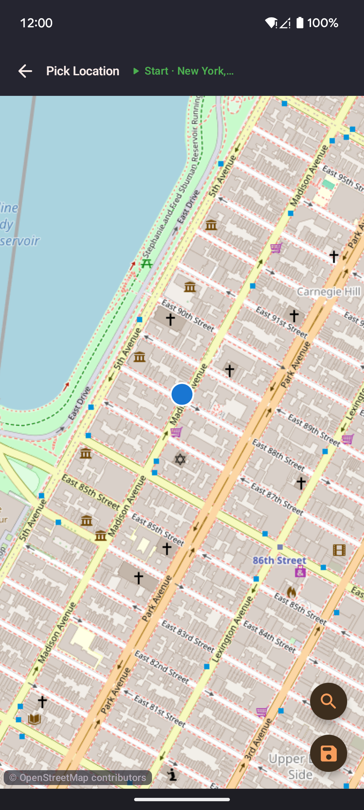

Routes & Favorites
Routes are lists of stops you replay at your chosen speed. Favorites are named places you walk or teleport to. Both stay on your device. See the privacy policy. Move routes and favorites to another phone with Backup & Transfer.
Routes

- Tap the add button to create a route.
- Tap a saved route to start it. You walk to the first stop, then playback follows the path. You can loop it, reverse it, or return to the start.
- Use the search box to find a route by name. The map's routes sheet has the same box. In the widget, tap the search icon next to the close button. Closing the list clears the search.
- Sort routes A–Z, Z–A, newest, or oldest. The widget's route list uses the same order.
- While a route plays, a count such as
3/12shows your current stop. It appears at the bottom of the map and widget button lists. - The three-dot menu on a route lets you edit, share, export, or delete it. Share lists every stop as
lat, lonlines to copy or send. - The widget's route detail has rename, share, and delete buttons. It closes before the share menu opens.
How to add a route
Tap the add button at the bottom right of the Routes screen.

- Draw on map: place stops by hand.
- Draw on map (follow roads): the route follows real streets.
- Draw on map (teleport): you jump between stops.
- Paste coordinates: build a route from a list of points.
- Import GPX file: import an existing route.
You can also open a GPX file from another app. Routes with thousands of points are skipped, and a message shows how many.
Route types
| Type | How it works |
|---|---|
| Straight | You move between stops in straight lines at your current speed. Works offline. Imported routes use this type. |
| Guided (road-following) | Each stretch between stops follows real roads. The app loads the roads from an online service, router.project-osrm.org. Walk and Run use walking roads. Bike uses cycling roads. If the service is unreachable, that stretch uses a straight line. The app saves the road path after the first load, so replays work offline. |
| Teleport | You jump between stops instead of walking. When you place a stop, the app asks how many seconds to stay there (at least 1). During playback, you wait at each stop, then jump to the next. Follow roads has no effect on this type. |
Replay options
Tap play on a saved route to open a sheet with these options. Cancel and Start are at the bottom of the sheet.
| Option | Description |
|---|---|
| Loop | On when the sheet opens. After the last stop, playback restarts from the first. It continues until you stop it. |
| Planting | Walks a circle around each stop instead of through its center. The saved route does not change. Turns Loop on. With Follow roads, only travel between circles follows roads. With Teleport between waypoints, you walk each circle, then jump to the next. |
| Reverse | Plays the stops from last to first. Works with Loop. |
| Return to start | After the last stop, you walk back to the first stop. This avoids a sudden jump when the route ends. |
| Follow roads | Not available for teleport routes. Movement between stops follows real roads. If teleport options are hidden in Settings, this also applies to the walk to the first stop. |
| Teleport between waypoints | Jumps from stop to stop instead of walking. Playback waits at each stop before the next jump. The default wait is 8 seconds. Change it in the box next to the checkbox (up to 10 minutes). Hidden when teleport options are off in Settings. |
| Teleport | Jumps to the first stop without starting playback. Tap Start when you are ready. With Planting on, it still jumps to the stop itself. Hidden when teleport options are off in Settings. |
| Start | Walks to the first stop (the last stop if Reverse is on) and starts playback. To jump there instead, tap Teleport first, or turn on Teleport between waypoints. |
| Pause / Resume | Pauses movement and keeps your route progress. Moving the joystick also pauses the route so you can steer. Letting go leaves it paused; tap Resume to continue from the saved progress. With Teleport between waypoints on, Resume jumps to the next stop. Pause or stop the route before starting roaming. |
| Previous / Next stop | Jumps to the stop before or after the current one. Available from the widget and the routes screen while a route runs. You then wait the usual delay before playback continues. Turn it on in Settings. |
Paste coordinates
Paste a list of coordinates to make a saved route. The app ignores lines it does not recognize, so you can keep headings and notes. Check Swap lat / lon order when the first number is longitude. The paste box on the map and widget accepts the same text and can start a route without saving.
- As-is joins the points with straight lines. Works offline.
- Walkable path follows real footpaths. Needs internet the first time. The app saves the path for offline replays.
- Planting mode walks a circle (35 meters by default) around each point instead of through it. It needs one point. The other modes need two or more.
- Optimize proximity reorders the points so each stop is near the previous one.
One paste makes one route. A route started without saving appears as Temp Route from Paste. The next start replaces it. Routes you saved under your own name stay.
Route creator
Tap the map to place stops. A line draws between them.

- Search for a place by name with the search button. Search uses nominatim.openstreetmap.org.
- Use the heart button to pick a favorite. The map moves there so you can place a stop. Use the target button to center the map on your position.
- Undo the last stop with the undo button.
- Before you save, choose straight, road-following, or teleport.
- On a teleport route, each stop asks how many seconds to stay. The default is 5. The minimum is 1.
- Record mode: tap record to save your phone's real movement as a route while you walk.
Route detail
Rename a route, reorder or remove stops, or change how it moves between stops.

- Drag stops to reorder them.
- Tap a stop to highlight it on the map.
- Choose the speed for this route, or choose "None" to use the current speed. Hidden for teleport routes.
- On a teleport route, each stop has an edit button for its wait time. "Set wait time for all stops" sets one wait time for every stop.
- On a teleport route, "Randomize order" jumps between stops in a random order. A looping route picks a new order each time it restarts.
- If you switch a route from straight to road-following, the app loads the roads again the next time you start it.
- Delete the route from the action bar. This cannot be undone.
Hot routes
In Settings, turn on Show hot routes to add ready-made routes for popular event locations around the world. They include large walking areas, parks, and landmarks. This is off by default.
- Turning it off removes only the routes this feature added. Your own routes stay.
- The setting is kept when you restart the app. Export and import include it.
- The list is updated online, with no app update needed. Routes that are removed disappear while this is on. New routes show up in the Settings list for you to tick.
Import formats
| Format | Notes |
|---|---|
| GPX | A common file format for GPS tracks and routes. Recorded tracks and planned routes both work. Both become straight-line routes. The app ignores elevation in the file. Altitude comes from the GPS realism settings. |
| GPS Joystick | Export a GPX file from GPS Joystick, then import it from Settings. Named places become favorites. Each route becomes straight lines. Routes with thousands of points are skipped, and a message shows how many. |
| YAMLA | The export file from the YAMLA app. Favorites and speeds are imported. Routes become straight lines. |
| locationjoystick backup | The app's own backup. It keeps everything, including route type and stops. Choose Add to merge it with your data, or Replace to overwrite your data. |
Favorites

- Tap a favorite to walk there (straight line or via roads) or teleport there.
- The share button next to Sort sends your current location as decimal degrees (e.g.,
11.012777, 79.480650). The widget has the same button. - Sort favorites A–Z, Z–A, newest, or oldest. The widget's favorites lists use the same order.
- Tap the house icon on a favorite to make it your Home. The app then starts there instead of your last location. Only one favorite can be Home. Tap the house again to clear it.
- The three-dot menu on a favorite lets you edit it, copy coordinates, send them as a message, or delete it.
Search and categories
- The search box at the top of the Favorites screen finds favorites by name or area as you type.
- Favorites with an area are grouped under the area name. Favorites without an area are listed at the bottom.
- The map sheet and widget have the same search. Closing the list clears it.
How to add a favorite
Tap the add button at the bottom right of the Favorites screen.

- From coordinates: type latitude and longitude in separate boxes.
- Paste coordinates: paste a pair such as
11.0127769, 79.48065or37°34'11.4"N 127°00'17.9"E. - From map: pick a point on the map.
- Use current location: save where you are now.
The paste box on the map can also save a pasted pair as a favorite.
Hot locations
In Settings, turn on Show hot locations to add popular places around the world to your favorites. They include cities, parks, and landmarks. This is off by default.
- Turning it off removes only the entries this feature added. Your own favorites stay.
- The setting persists when you restart. Export and import include it.
- Each hot location uses its country as its area name.
- The list is updated online, with no app update needed. Places that are removed disappear from your favorites while this is on. New places show up in the Settings list for you to tick.
Map picker
"From map" opens a full-screen map. Tap to place a pin, or search for a place by name. See Settings → External services for what the search service receives.

- Search by place name to move the map to an address or landmark.
- Tap the map to move the pin to an exact spot.
- Confirm to save the pin with a name.